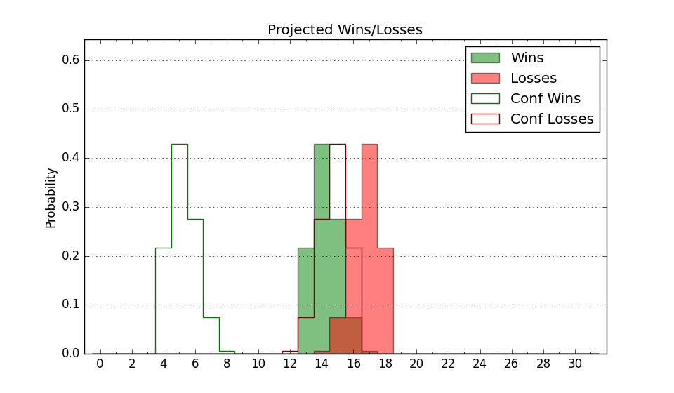

| Home | Game Probabilities | Conferences | Preseason Predictions | Odds Charts | NCAA Tournament |
| City: | Tempe, Arizona | |
| Conference: | Big 12 (15th)
| |
| Record: | 4-12 (Conf) 13-14 (Overall) | |
| Ratings: | Comp.: 15.8 (58th) Net: 15.8 (58th) Off: 111.8 (86th) Def: 96.0 (38th) SoR: 6.0 (64th) |
| Remaining | ||||||
|---|---|---|---|---|---|---|
| Date | Opponent | Win Prob | Pred. | |||
| 2/26 | BYU (25) | 43.2% | L 74-76 | |||
| 3/1 | @ Utah (71) | 39.5% | L 72-75 | |||
| 3/4 | @ Arizona (8) | 11.8% | L 69-84 | |||
| 3/8 | Texas Tech (7) | 28.5% | L 70-76 | |||
| Previous | Game Score | |||||
| Date | Opponent | Win Prob | Result | Off | Def | Net |
| 11/5 | Idaho St. (176) | 90.8% | W 55-48 | -36.4 | 21.8 | -14.6 |
| 11/8 | (N) Santa Clara (55) | 45.7% | W 81-74 | 8.6 | 1.8 | 10.4 |
| 11/10 | @Gonzaga (9) | 11.9% | L 80-88 | 10.7 | -5.5 | 5.2 |
| 11/14 | (N) Grand Canyon (99) | 69.3% | W 87-76 | 14.4 | -7.9 | 6.4 |
| 11/17 | St. Thomas MN (116) | 84.7% | W 81-66 | -1.9 | 7.3 | 5.3 |
| 11/20 | Cal Poly (216) | 93.1% | W 93-89 | 0.7 | -19.7 | -18.9 |
| 11/28 | (N) New Mexico (46) | 41.5% | W 85-82 | 19.7 | -1.7 | 18.1 |
| 11/29 | (N) Saint Mary's (20) | 27.1% | W 68-64 | -0.7 | 12.4 | 11.6 |
| 12/3 | San Diego (288) | 96.7% | W 90-53 | 0.7 | 12.7 | 13.4 |
| 12/14 | (N) Florida (5) | 12.4% | L 66-83 | -9.9 | 6.0 | -3.8 |
| 12/21 | (N) Massachusetts (208) | 87.6% | W 78-62 | -2.5 | 2.3 | -0.2 |
| 12/31 | @BYU (25) | 18.2% | L 56-76 | -13.6 | 2.6 | -11.0 |
| 1/4 | Colorado (90) | 77.7% | W 81-61 | 7.9 | 9.4 | 17.3 |
| 1/8 | @Kansas (18) | 16.4% | L 55-74 | -12.1 | 1.4 | -10.6 |
| 1/11 | Baylor (19) | 40.5% | L 66-72 | -16.4 | 8.6 | -7.8 |
| 1/14 | UCF (78) | 73.9% | L 89-95 | 4.8 | -20.3 | -15.5 |
| 1/18 | @Cincinnati (41) | 24.4% | L 60-67 | -4.7 | 4.4 | -0.3 |
| 1/21 | @West Virginia (45) | 26.6% | W 65-57 | 10.1 | 17.6 | 27.7 |
| 1/25 | Iowa St. (10) | 32.1% | L 61-76 | -10.7 | -4.6 | -15.3 |
| 1/28 | @Colorado (90) | 50.5% | W 70-68 | -3.0 | 1.9 | -1.1 |
| 2/1 | Arizona (8) | 31.3% | L 72-81 | -3.4 | 0.0 | -3.4 |
| 2/4 | Kansas St. (75) | 71.1% | L 70-71 | 0.2 | -7.3 | -7.1 |
| 2/9 | @Oklahoma St. (98) | 54.9% | L 73-86 | -6.7 | -8.1 | -14.9 |
| 2/12 | @Texas Tech (7) | 10.5% | L 106-111 | 26.4 | -12.0 | 14.5 |
| 2/15 | TCU (79) | 74.1% | L 70-74 | -10.3 | -5.1 | -15.4 |
| 2/18 | Houston (3) | 15.5% | L 65-80 | 12.5 | -17.3 | -4.7 |
| 2/23 | @Kansas St. (75) | 42.0% | W 66-54 | -4.6 | 28.1 | 23.5 |
| Stats & Trends | |||||
|---|---|---|---|---|---|
| Current | Day | Week | Month | Season | |
| Composite | 15.8 | -0.0 | +0.7 | -0.2 | +3.1 |
| Comp Rank | 58 | -- | +3 | +3 | +6 |
| Net Efficiency | 15.8 | -0.0 | +0.7 | -0.4 | -- |
| Net Rank | 58 | -- | +3 | +3 | -- |
| Off Efficiency | 111.8 | -0.0 | -0.3 | +1.1 | -- |
| Off Rank | 86 | -- | -- | +14 | -- |
| Def Efficiency | 96.0 | -0.0 | +1.0 | -1.5 | -- |
| Def Rank | 38 | +1 | +10 | -7 | -- |
| SoS Rank | 4 | -- | -- | -1 | -- |
| Exp. Wins | 14.2 | -0.0 | +0.7 | -2.0 | -0.4 |
| Exp. Conf Wins | 5.2 | -0.0 | +0.7 | -2.0 | -2.5 |
| Conf Champ Prob | 0.0 | -- | -- | -- | -0.3 |

| Advanced Stats | ||
|---|---|---|
| Stat | Value | Rank |
| Off Eff FG % | 0.558 | 49 |
| Off Ast Ratio | 0.159 | 99 |
| Off ORB% | 0.264 | 249 |
| Off TO Rate | 0.148 | 180 |
| Off FT Ratio | 0.378 | 65 |
| Def Eff FG % | 0.454 | 29 |
| Def Ast Ratio | 0.126 | 57 |
| Def ORB% | 0.249 | 44 |
| Def TO Rate | 0.155 | 117 |
| Def FT Ratio | 0.296 | 101 |